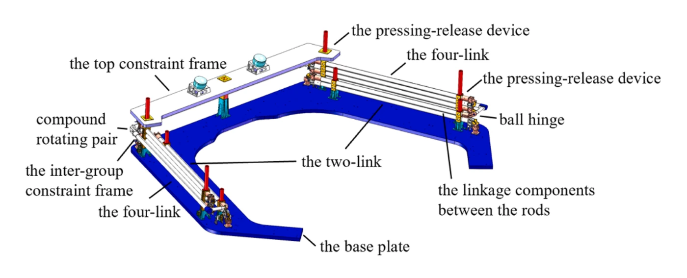
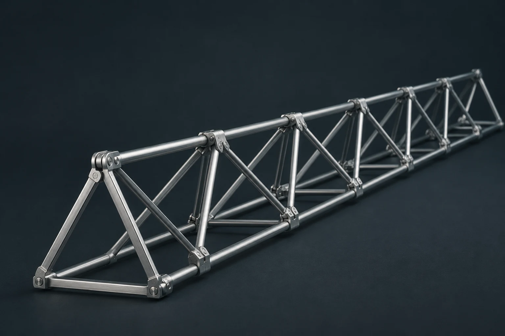
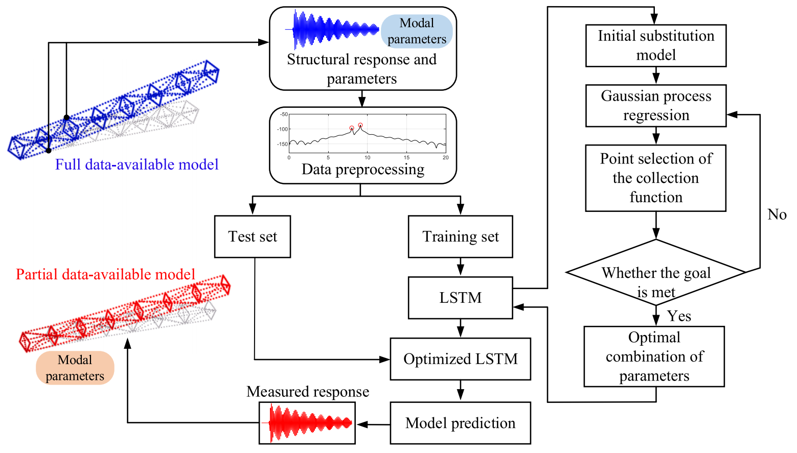
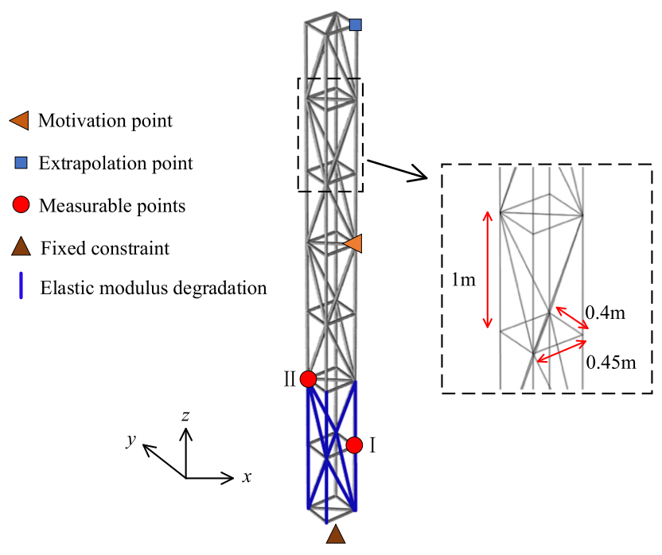
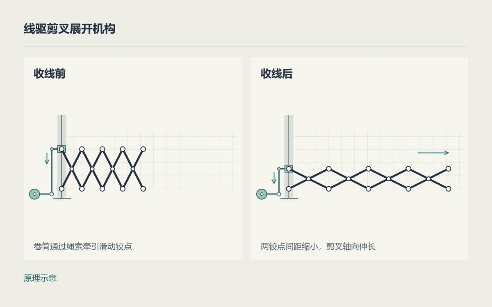

空间可展开结构 / 瞬态动力学 / 展开同步 / 多目标优化
空间展开骨架的同步性与锁定冲击优化
-
调节弹簧和拉索的初始受力，让骨架展开得更协调，末端锁定时的冲击更小。
技能：主被动零重力装置、动力学模型修正、展开驱动多目标优化
机构工程师上海
我关注结构如何从收拢状态可靠展开，成为在轨任务的支撑。
2026 年 9 月从哈尔滨工业大学博士毕业，目前在上海从事航天机构工程。做过机构设计、多体动力学建模与展开试验。
查看代表项目
从展开机构设计、动力学建模，到样机试验和模型修正。

空间可展开结构 / 瞬态动力学 / 展开同步 / 多目标优化
-
调节弹簧和拉索的初始受力，让骨架展开得更协调，末端锁定时的冲击更小。
技能：主被动零重力装置、动力学模型修正、展开驱动多目标优化


变模态结构 / 伴随灵敏度 / 贝叶斯优化 LSTM / 响应重构
-
用少量测点的振动数据更新结构模型，估算其他位置的振动。地面试验显示，即使结构的振动特性发生变化，这种方法也能提高估算精度，为航天器结构健康监测提供依据。
技能：三维动捕（Optitrack）、模态辨识

展开试验 / 模型修正
参与机构设计和装配，开展展开试验，用实测数据修正耦合动力学模型。

瞬态仿真 / 驱动策略
建立多体动力学模型分析展开过程，比较不同收线速度曲线下的机构响应。
从博士研究到工程一线。
记录对航天机构的判断，以及还有待验证的问题。
展开机构是空间任务的基础设施。围绕这个方向，我想持续理解，怎样把一套机构从方案推进到可靠、可验证的交付。
展开时间对上了，我还会看什么？过程响应、重复性与模型的适用范围给每一年的变化、判断和问题留一页。
欢迎交流空间展开机构、动力学建模与试验验证。